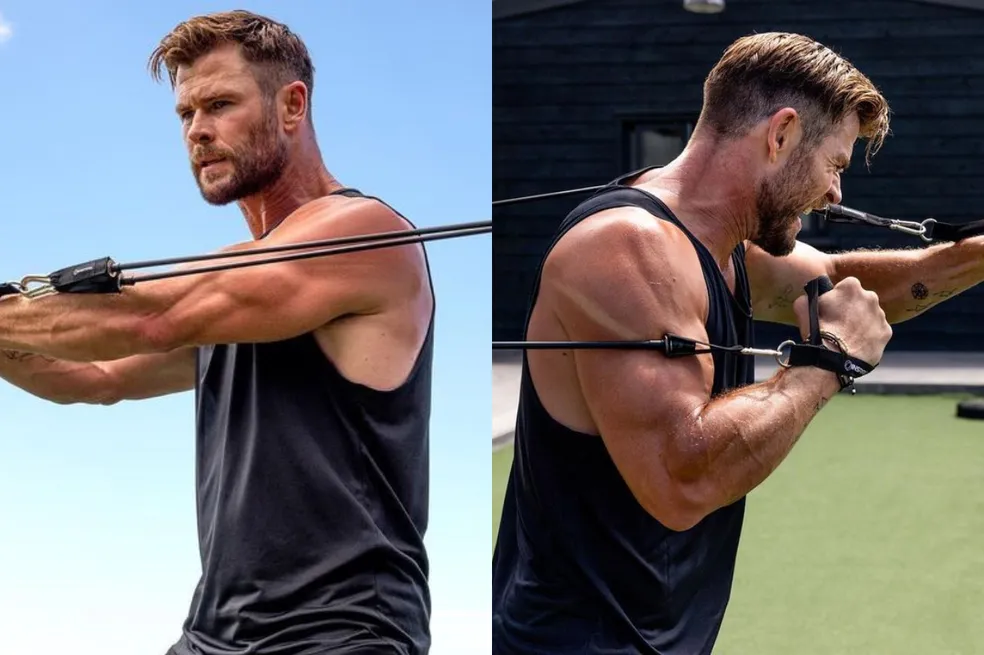
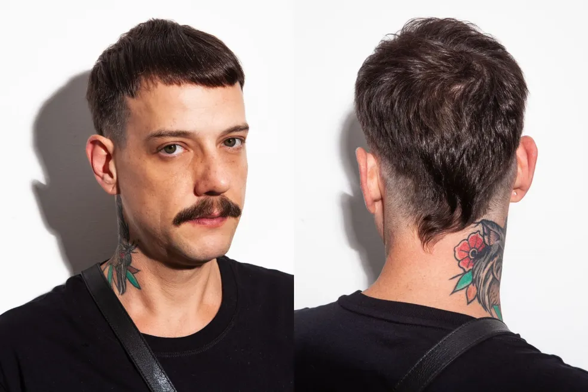
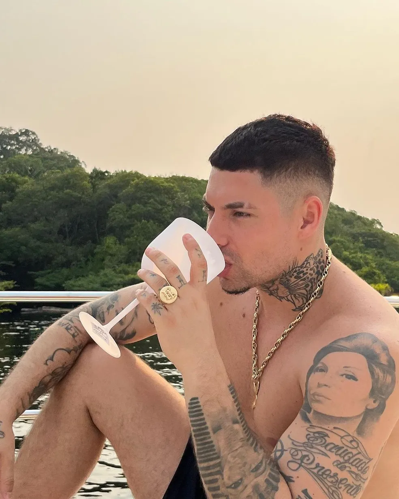
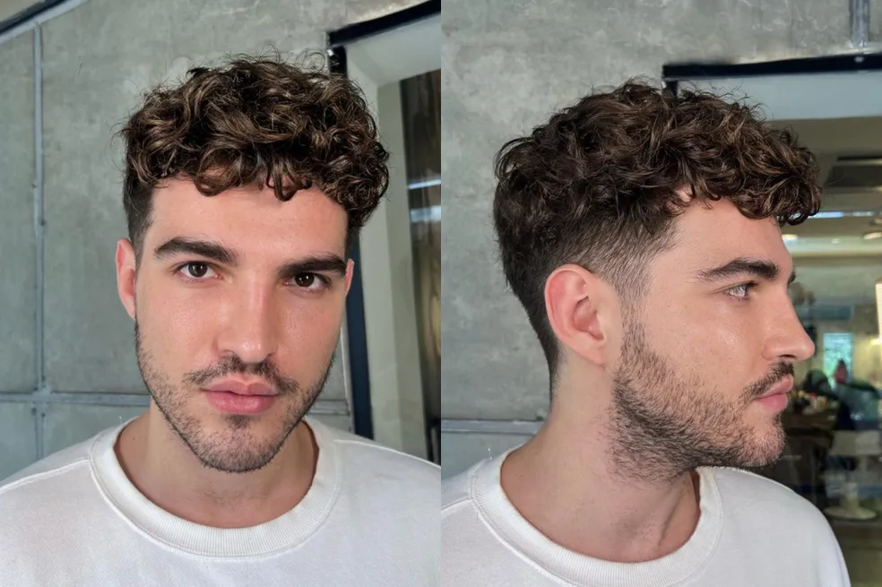

Entre os cortes mais pedidos nos salões e barbearias estão o raspado na lateral e o corte militar (bem curtinho). "Ele [o corte militar] é o corte mais prático e o mais pedido", afirma Celso. Tradicionais nos salões, esses estilos se mantêm firmes e fortes para 2023. Então, pode apostar neles sem medo.
Há ainda cortes como os moicanos e os mullets voltando à cena. "O moicano ficou moderno e é uma tendência de corte de cabelo masculino que está bombando no momento", explica Filipe. "Bem diferente do moicano tradicional, ele aparece com as laterais em degradê e com tamanhos diferentes, sendo bem versátil."
 Um aspecto que aparece em diversos cortes é o efeito degradê. "Também conhecido
como fade hair, ele se adapta a diferentes estilos e visuais,
sendo usado em quase
todos os cortes atuais", explica Filipe. "Em 2023, ele vem com força e promete ficar
por um bom tempo." A técnica degradê aparece, por exemplo, no corte
americano, um
fade hair com as laterais raspadas. O estilo ficou famoso após Filipe Ret lançar uma
música com o nome do corte e virou tendência nas barbearias brasileiras.

Aliás, cortes com mais volume no topo e mais batidos nas laterais são boas opções para quem tem cabelos cacheados ou crespos. E a tendência para 2023 é valorizar as ondas. “Eles [os homens] não estão mais querendo escondê-los”, comenta Celso.
 Seguindo na linha da descoloração, não poderia ficar de fora o
famoso nevou, com a cor mais branca. "Essa tendência se popularizou
entre jogadores de futebol e MCs
e é vista principalmente nas periferias
do Rio de Janeiro e São Paulo. Ela vem com tudo nesse verão de 2023", aposta Filipe.
Um bom exemplo para inspiração é o cabelo platinado de Richarlison,
que apareceu na Copa
do Mundo 2022 com o seu nevou e chegou a inspirar Neymar a adotar o visual.